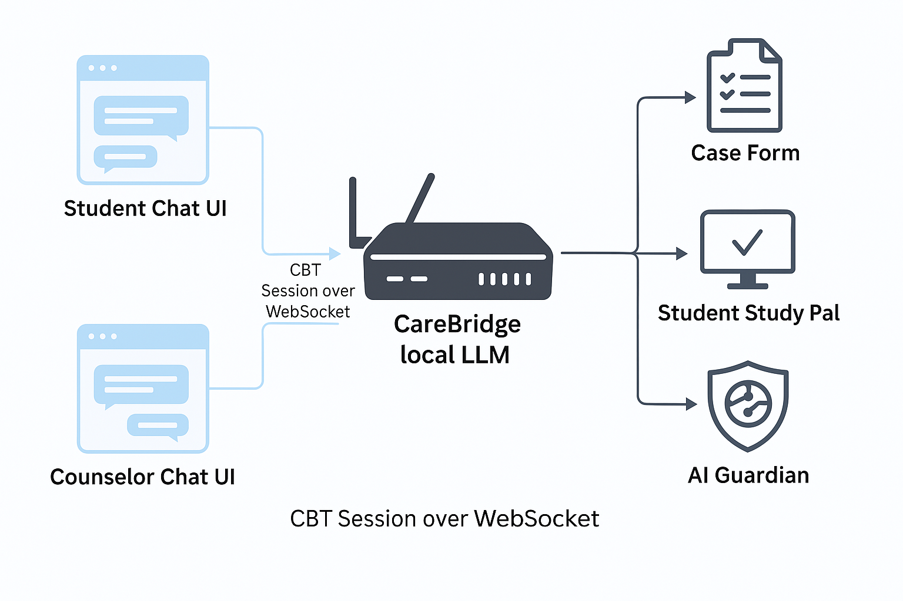
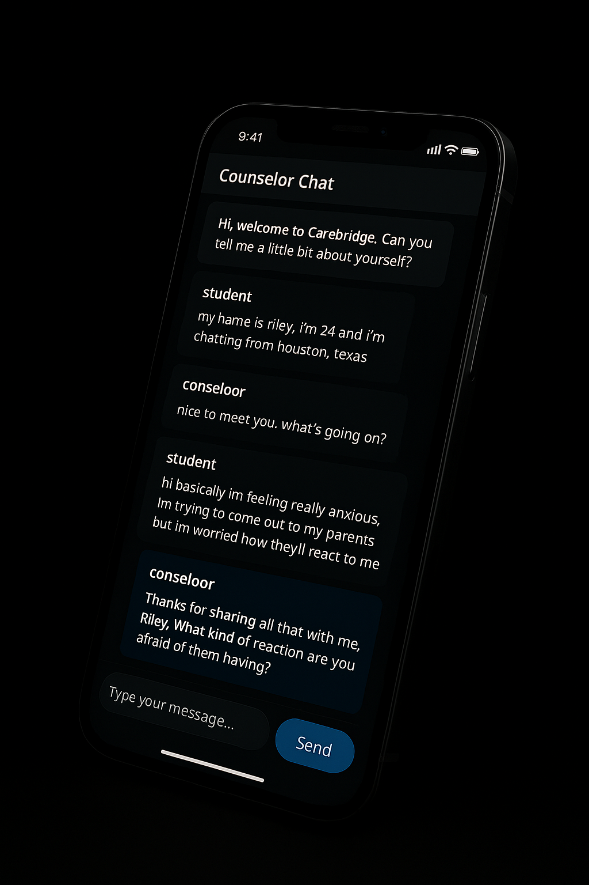
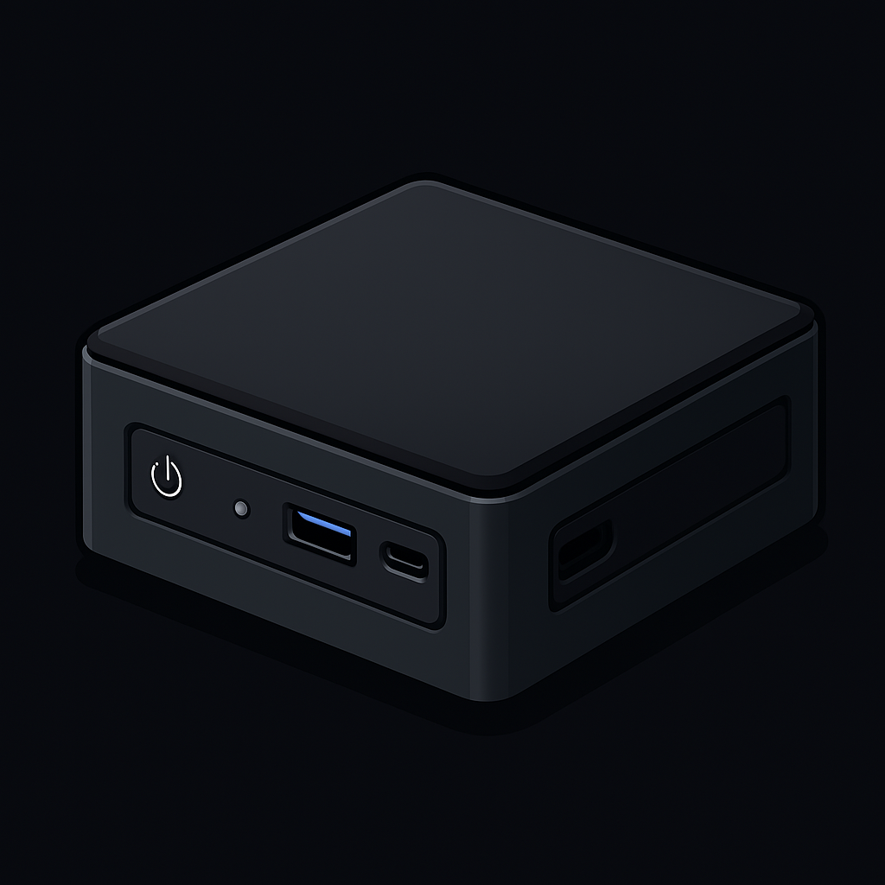
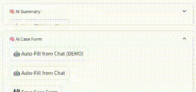

A local-first solution empowering schools with secure, AI-assisted mental health support — cutting paperwork and enhancing care delivery with zero dependency on the cloud.
🎬 CareBridge Overview
🛡️ Suicide Detection
🛡️ AI Guardian in Action
🧭 CareBridge System Diagram


Student Mobile Experience

Local CareBridge Box

Auto-Populated Case Form
🧑🎓 Student Chat UI: Real-time CBT-style conversations via secure WebSocket, with automatic session logging — no note-taking required.
🧑⚕️ Counselor Dashboard: Instantly review AI-organized transcripts and auto-generated case summaries and treatment plans — drastically reducing paperwork.
🧠 CareBridge Local LLM: On-device AI that drafts progress notes, identifies patterns, and fills out forms — without compromising privacy or requiring manual input.
📘 Study Pal: Student-facing self-help companion that reinforces coping strategies and homework — guided by the counselor's plan with no extra admin overhead.
🛡️ AI Guardian: Monitors for rogue AI behavior and data leakage — no IT setup required, so your team stays focused on care, not compliance.
🔐 Built-in VPN: Seamless, secure connections for remote counseling sessions — no IT tickets or external hosting needed.
“CareBridge helped us streamline our counseling sessions and improve student outcomes — all without sending any data to the cloud.” — High School Administrator
“The AI summaries are surprisingly good — it gives me more time to focus on student care.” — School Counselor
📬 Contact Us
📄 Download the Full Architecture
View a detailed PDF overview of how CareBridge works from chat UI to VPN protection.